보행육교와 지하보도
|
1960년대부터 1970년대까지 서울의 도로는 매우 복잡했다. 이러한 교통 혼잡은 단순 인구 증가에 따른 차량 증가보다 도로 부족과 미숙한 도로교통 운영으로 인해 발생했다. 서울시내 교통난이 심각해짐에 따라 당시 재임 중이던 김현옥 시장은 ‘서울특별시 교통난 완화책’의 단기 정책으로 지하보도와 보행육교 건설을 적극적으로 추진하였다. 이에 도로에 꽉 들어찬 자동차의 원활한 소통을 위해 보행자를 입체적으로 분리시키는 지하보도와 보행육교가 서울 곳곳에 건설되었다.(서울교통사, 164p) |
|
| [KTV 아카이브] 대한뉴스 제 567호-서울시 교통난 완화 (1966-04-23) |
|
| 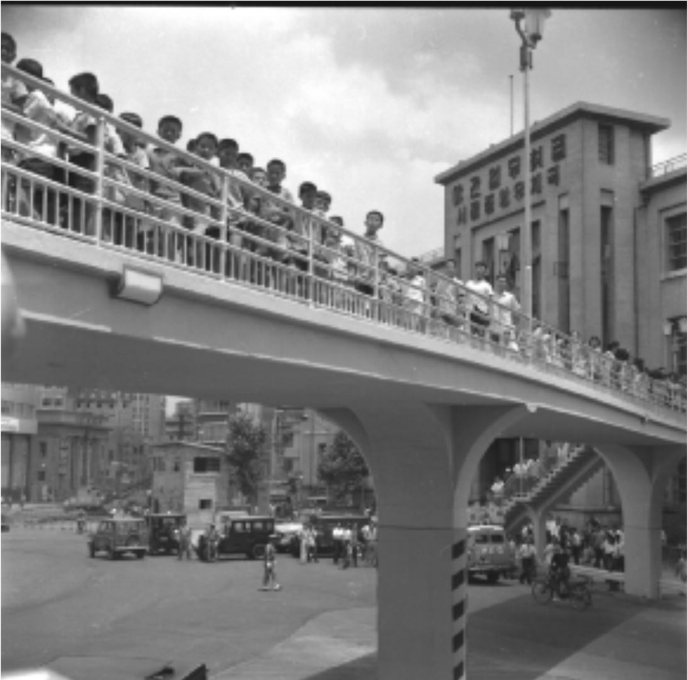 |
지하보도는 도로 등의 지하에 보행자의 통행을 위해 설치된 시설로 서울시에서는 1966년 광화문지하보도를 시작으로 여러 개의 지하보도 건설되었고, 1970년대에도 회현지하도를 필두로 지하보도 건설이 계속되었다. |
| [RG5-SR89-IT1944] 신세계 백화점 앞 육교 개통식(1966-06-22) |
|
|
지하보도와 보행육교는 결과적으로 보차분리와 같은 교통안전시설로 볼 수 있기에 보행 관련 정책으로 볼 수 있다. 그러나 김현옥 시장이 “지하도와 육교는 현재의 교통지옥을 해소하기 위한 지름길”이라고 언급한 것에서 알 수 있듯이 자동차의 원활한 교통 순환을 위해 건설되었다고 보는 것이 적합하며 당시 교통안전을 위한 정책으로 추진했는지는 의문을 가지게 된다. (서울교통사, 50p) |
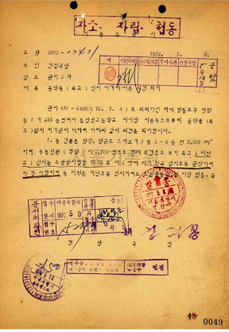 |
| [RG303535-SR119908-FI81213-IT1144641] 공작물(육교)설치허가에따른의견회신 (1972-05-08) |
교통난 극복을 위해 건설된 지하보도와 보행육교는 1960년대 중후반부터 건설 본격화되어 1970년부터 1980년에 전성기를 이루었다. 지하보도는 1960년대에 광화문지하보도, 의주로지하도, 서울역지하도가 건설되었고 1970 ~ 1980년대에 많은 지하보도가 건설되었다. 보행육교는 건설 비용이 지하보도에 비해 50~60% 정도 적었기 때문에 지하보도보다 보행육교가 더 많이 건설되었고, 1960년대부터 시작된 보행육교 건설은 1990년대 중반 서울 시내에 250여 개에 달하는 육교가 건설되었다.
| 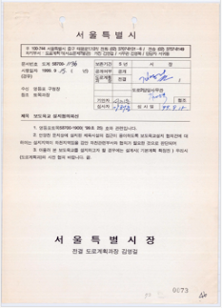 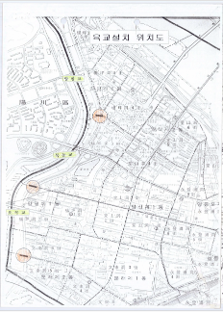 | |||
| 보도육교 설치협의회신,1999 | |||
| 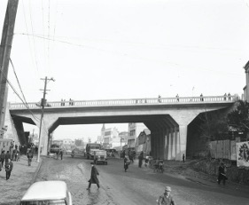 | 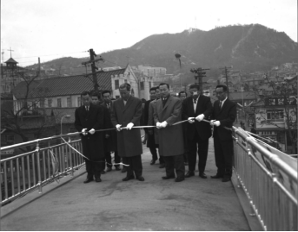 | 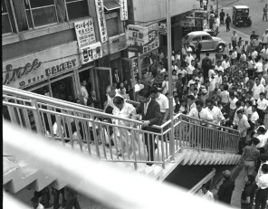 | 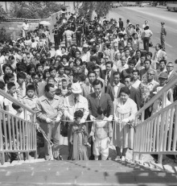 |
| [RG5-SR90-IT2625] 남산 육교 및 도로(1963-01-12) |
[RG5-SR89-IT2591] 퇴계로 육교 개통식(1964-12-24) |
[RG5-SR89-IT1994] 대한항공사 앞 육교 개통식(1966-06-22) |
[RG5-SR89-IT2505] 은평육교 준공식(1975-05-27) |
그러나 차량 소통 중시와 외곽지역 횡단보행사고 예방 차원에서 많이 건설된 지하보도와 보행육교는 사실상 무단횡단 근절을 이루어낼 수 없었다. 이는 『도로교통법 시행규칙』에 지하보도나 보행육교가 있는 주변에는 횡단보도를 설치할 수 없다고 나와 있기에 해당 시설 근처에는 횡단보도를 설치할 수 없었다. 그러나 시민들이 불필요할 정도로 많이 설치된 시설들을 기피하고 무단횡단이 빈번하게 일어나면서 오히려 보행육교 주변에서 교통사고가 더 많이 발생하기도 하였다.(서울교통사, 164p)
지하보도와 보행육교는 횡단보도와 달리 신호의 기다림에 구애받지 않고 비교적 외부의 영향을 적게 받으며 원활한 보행통행이 가능하게 한다는 장점도 있지만, 편의성에서 교통약자 뿐만 아니라 일반인에게도 상당히 불편한 교통시설이다. 지하보도와 보행육교는 횡단보도보다 보행동선이 길고 계단을 사용하여야 하기에 노약자, 장애인, 어린이 등 교통약자가 이용하기에 불편하기 때문이다.
1990년대 초반 ‘보행권’이 사회적으로 대두되기 시작한 후 보행 관련 정책이나 인식이 자동차 중심에서 보행자 중심으로 점차 전환되었다. 이러한 인식 변화에 따라 지하보도와 보행육교는 도시미관과 시설 주변에서의 교통사고, 교통약자 이용 불편 등을 이유로 대거 철거되기 시작하였고 횡단보도가 대체되거나 설치되었다.
| 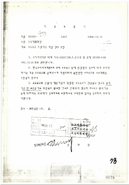 | 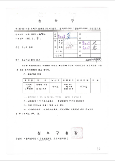 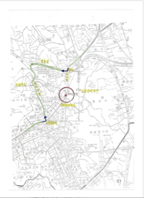 |
| 보도육교 시설기준 제정 검토 요청[사본] / IT1402951 | 보도육교 설치협의회신,1999 |